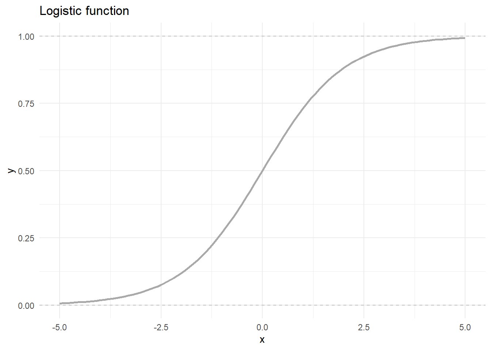
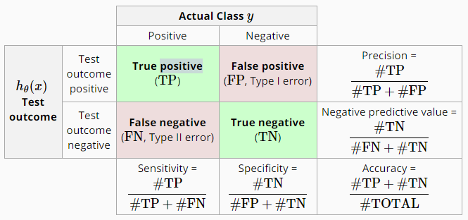
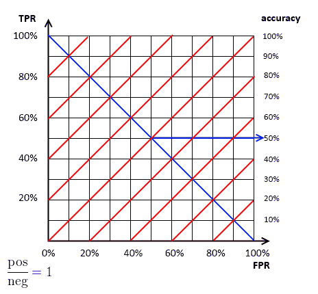
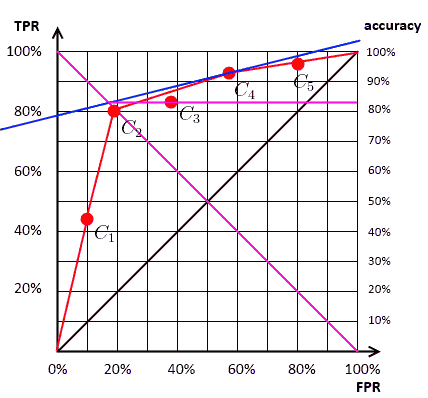

Chương 10 Mô hình hồi quy logistic
Khi phân tích dữ liệu, bên cạnh biến liên tục, ta thường xuyên phải làm việc với các biến rời rạc, các biến có đặc tinh nhóm (category) như “mua hàng vs. không mua hàng”, “giàu vs. nghèo”, “nợ xấu vs. không nợ xấu”. Quá trình phân tích và dự báo các quan sát thuộc về nhóm nào được gọi là quá trình phân loại (classification).
Đối với bài toán phân loại, ta có thể chia thành hai nhóm lớn là phân loại hai biến và phân loại nhiều biến. Trong đó, bài toán phân loại hai biến là bài toán phổ biến nhất, được ứng dụng trong nhiều lĩnh vực trong đời sống như đánh giá điểm tín dụng của khách hàng, dự báo khách hàng phản ứng với chiến dịch marketing…
Trong chương này, chúng ta sẽ làm quen vơi kỹ thuật nổi tiếng và được ứng dụng sớm nhất trong việc phân loại hai biến (binary classification) là logistic regression.
Nếu như mô hình hồi quy tuyến tính thường (linear regression) cho phép chúng ta tìm được mối quan hệ giữa biến phụ thuộc liên tục (continous dependent variable) và một/nhiều biến độc lập (independent variable) - liên tục hoặc không liên tục thì mô hình hồi quy Logistic tìm mối quan hệ giữa biến phụ thuộc là biến nhị phân - binary variable. Biến cần dự báo dạng này chỉ nhận 2 giá trị: có/không, sống/chết, yêu/không yêu… và các biến độc lập có thể là liên tục hoặc không liên tục.
Ví dụ, ta tìm hiểu mối quan hệ giữa việc KH có nợ xấu hay không dựa vào dư nợ của KH - thông qua việc tìm hiểu khả năng khách hàng có nợ xấu dựa vào thông tin dư nợ của KH. Trong đó:
- Biến phụ thuộc:
\[Y = \begin{cases}1, & KH\:có\:nợ\:xấu\\ 0, & KH\:không\:có\:nợ\:xấu\end{cases}\]
- Biến độc lập: X - dư nợ của KH (hay số tiền khách hàng nợ ngân hàng)
Trong mô hình này, ta không thể sử dụng mô hình hồi quy thông thường bởi lẽ biến phụ thuộc chỉ có hai giá trị 0 và 1. Hơn nữa, cái ta cần dự báo là “xác suất” xảy ra sự kiện (xác suất vỡ nợ) cho mỗi quan sát. Để giải quyết vấn đề nay, ta có thể sử dụng mô hình logistic có dạng như sau:
\[p= Pr(Y=1)=\frac{e^{B_{0} + B_{1}X}}{1+e^{B_{0} + B_{1}X}}\] Trong đó, \(p\) là xác suất khách hàng có nợ xấu, \((1-p)\) là xác suất khách hàng không có nợ xấu.
\[Pr(Y=0)=1-p=\frac{1}{1+e^{B_{0} + B_{1}X}}\]
Lưu ý: Trong các bài toán phân loại, nhóm ta cần dự báo còn được gọi là class positive hay event of interest. Khi ứng dụng với các bài toán cụ thể khác nhau, class sẽ được xây dựng khác nhau. Ví dụ: trong dự báo khách hàng phản hồi, thì sự kiện khách hàng phản hồi email là 1, không phản hồi email là 0. Khi dự báo khách hàng có nợ xấu, khách hàng có nợ xấu được đánh dấu là 1, không có nợ xấu được đánh dấu là 0.
Trong mô hình logistic, ta còn có một chỉ số khác được gọi là \(Odds\: ratio\), tạm dịch là khả năng xảy ra sự kiện so với khả năng không xảy ra sự kiện. Với bài toán dự báo nợ xấu, chỉ số này cho chúng ta biết xác suất khách hàng có nợ xấu cao hơn bao nhiêu lần bao nhiêu lần so với xác suất khách hàng không có nợ xấu.
\[Odds=\frac{p}{1-p}=e^{B_{0} + B_{1}X}\]
Ví dụ:
- Xác suất khách hàng có nợ xấu: p = 0.8
- Xác suất khách hàng không có nợ xấu: 1-p = 1-0.8=0.2
- Odd ration: \(p/(1-p) = 4\) - khả năng khách hàng có nợ xấu cao gấp 4 lần khả năng khách hàng không có nợ xấu.
Logit: Là hàm log của odd ratio, được tính như sau.
\[logit=ln(Odds)=ln(\frac{p}{1-p}) = B_{0} + B_{1}X\]
Phương trình trên gọi là phương trình hồi quy Logistic. Hàm này có thể chứa các giá trị bất kỳ trong khoảng từ \((-\infty, +\infty)\). Lúc này, hàm trên đã trở về hàm hồi quy thông thường. Như vậy, mô hình chúng ta cần xây dựng có dạng:
\[logit(p) = \alpha + \beta X\]
hay:
\[odds(p) = \frac{p}{1-p} = e^{\alpha + \beta X}\]
Giải thích ý nghĩa: Khi x tăng thêm 1 đơn vị, thì Odds ratio (tỷ số khả dĩ) sẽ tăng thêm \(e^{\beta}\). Nghĩa là, khi x tăng thêm 1 đơn vị, khả năng (chance) xảy ra biến cố X sẽ tăng lên \(e^{\beta}\) lần.
- Khi \(x = x_0\), khả năng xảy ra biến cố là: \[odds(p|x=x_0) = e^{\alpha + \beta x_0}\]
- Khi \(x = x_0 + 1\), khả năng xảy ra biến cố là: \[odds(p|x=x_0+1) = e^{\alpha + \beta (x_0+1)}\]
- Tỷ số giữa 2 khả năng là: \[\frac{e^{\alpha + \beta (x_0+1)}}{e^{\alpha + \beta (x_0)}} = e^{\beta}\]
Lưu ý: Cách giải thích ý nghĩa của hệ số \(\beta\) trong Logistic rất dễ nhầm lẫn. Cơ bản có 2 cách như sau:
- Cách 1: Giải thích dựa trên “xác suất” xảy ra biến cố A. Cách tính này dựa trên việc đưa ra tính toán xác suất xảy ra A với X cho trước.
- Cách 2: Dựa trên “khả năng” xảy ra biến cố A (Odd ratio)
## Warning: package 'tidyverse' was built under R version 3.4.4## -- Attaching packages ------- tidyverse 1.2.1 --## v ggplot2 3.2.0 v purrr 0.2.5
## v tibble 2.1.1 v dplyr 0.8.0.1
## v tidyr 0.8.2 v stringr 1.4.0
## v readr 1.3.1 v forcats 0.3.0## Warning: package 'tibble' was built under R version 3.4.4## Warning: package 'tidyr' was built under R version 3.4.4## Warning: package 'readr' was built under R version 3.4.4## Warning: package 'purrr' was built under R version 3.4.4## Warning: package 'dplyr' was built under R version 3.4.4## Warning: package 'stringr' was built under R version 3.4.4## Warning: package 'forcats' was built under R version 3.4.4## -- Conflicts ---------- tidyverse_conflicts() --
## x dplyr::filter() masks stats::filter()
## x dplyr::lag() masks stats::lag()
10.1 Cách xây dựng mô hình
Để ước lượng các tham số \(\beta_j\), ta dùng phương pháp hợp lý tối đa (maximum likelihood), nghĩa là tìm \(\beta_j\) để tối đa hóa hàm likelihood.
\[L = p_1*p_2*...*p_n= \prod_{i=1}^np_i\]
Trong đó, \(p_i\) là xác suất xảy sự kiện của quan sát thứ \(i\).
Trong bài toán hồi quy logistic, ta quan tâm đến việc dự báo chính xác sự kiện xảy ra (\(P_{y = 1}\)). Do đó, hàm likelihood trong bài toán nhị phân được tính như sau.
\[L = \prod[-y_i*log(h_\theta(x_i)) - (1-y_i)log(1-h_\theta(x_i))]\] Trong đó:
- \(y_i\): Là giá trị thực tế của biến cần dự báo (1 hoặc 0) tại quan sát i
- \(h_{\theta}(x_i)\): Giá trị dự báo của quan sát i. Giá trị này nằm trong khoảng [0, 1]
Xem ví dụ dưới đây:
| Thực tế | Dự báo | L |
|---|---|---|
| 1 | 0.7 | 0.7 |
| 0 | 0.6 | 0.4 |
| 1 | 0.8 | 0.8 |
Với mô hình trên, ta có:
\[L = 0.7 * 0.4 * 0.8 = 0.224\]
\[log(L) = log(0.224) = -1.496\]
Như vậy, về mặt hình ảnh, hàm Likelihood sẽ tìm cách fit dữ liệu sao cho sát với dữ liệu thực tế nhiều nhất. Hàm này sẽ đạt giá trị tối đa bằng 1 (L = 1), ứng với \(log(L_{max}) = 0\)
Để hiểu hơn về cách tối ưu hóa Logistic trong trường hợp đơn giản, xem ví dụ trong file excel đính kèm
10.2 Ví dụ xây dựng mô hình đơn giản
library(ISLR)
library(tidyverse)
data <- Default %>%
select(-student) %>%
mutate(default = case_when(
default == "Yes" ~ 1,
TRUE ~ 0
))## Warning: package 'broom' was built under R version 3.4.4##
## Call:
## glm(formula = default ~ income + balance, family = "binomial",
## data = data)
##
## Deviance Residuals:
## Min 1Q Median 3Q Max
## -2.4725 -0.1444 -0.0574 -0.0211 3.7245
##
## Coefficients:
## Estimate Std. Error z value Pr(>|z|)
## (Intercept) -1.154e+01 4.348e-01 -26.545 < 2e-16 ***
## income 2.081e-05 4.985e-06 4.174 2.99e-05 ***
## balance 5.647e-03 2.274e-04 24.836 < 2e-16 ***
## ---
## Signif. codes: 0 '***' 0.001 '**' 0.01 '*' 0.05 '.' 0.1 ' ' 1
##
## (Dispersion parameter for binomial family taken to be 1)
##
## Null deviance: 2920.6 on 9999 degrees of freedom
## Residual deviance: 1579.0 on 9997 degrees of freedom
## AIC: 1585
##
## Number of Fisher Scoring iterations: 8library(broom)
model %>%
tidy %>%
filter(term != "(Intercept)") %>%
select(term, estimate) %>%
mutate(`odd_increase (thousands USD)` = exp(1000*estimate))## # A tibble: 2 x 3
## term estimate `odd_increase (thousands USD)`
## <chr> <dbl> <dbl>
## 1 income 0.0000208 1.02
## 2 balance 0.00565 283.Ý nghĩa:
- Nếu
balancetăng 1000 USD, khả năng khách hàng có nợ xấu tăng 283 lần - Nếu
incometăng 1000 USD, khả năng khách hàng có nợ xấu tăng 1.02 lần
Khi ước lượng được các tham số \(\beta_j\), với mỗi KH cụ thể ta có thể ước lượng được XS KH có nợ xấu bằng bao nhiêu dựa vào dư nợ của KH đó. Từ đó, ta có thể phân loại được KH Good/Bad (ko có nợ xấu/có nợ xấu) bằng việc so sánh XS có nợ xấu của KH với giá trị ngưỡng (“cutoff point”).
Ví dụ, XS có nợ xấu của KH A là 0.2, điểm cutoff ta lựa chọn để phân loại là 0.5 -> KH A - “Good”.
Dự báo trên tập mới.
Để dự báo trên tập dữ liệu mới, ta có thể dùng hàm predict với option type = "response" để trả ra kết quả dưới dạng xác suất xảy ra event (trong ví dụ này là xác suất xảy ra nợ xâu)
## 1 2 3 4 5
## 0.0015047280 0.0012619299 0.0080262106 0.0004059957 0.0018267237
## 6
## 0.002042439810.3 Các chỉ số cần quan tâm khác
Null deviance vs. Residual Deviance
- LL: Log Likelihood \[null\;deviance = 2(LL(saturated\;model) - LL(null\;model))\] \[residual\;deviance = 2(LL(saturated\;model) - LL(proposed\;model))\]
- Trong đó:
- Saturated Model: Mỗi quan sát có 1 tham số riêng cần phải ước lượng (n tham số)
- Null Model: Tất cả quan sát chỉ có 1 tham số
- Proposed Model: Mô hình có p tham số ứng với p biến và 1 tham số ứng với intercept (p+1 tham số)
- Nếu Null deviance thấp, nghĩa là mô hình có thể giải thích bằng mô hình đơn giản
10.4 Đánh giá chất lượng mô hình
Khi xây dựng mô hình dự báo, kết quả dự báo sẽ được trả ra dưới dạng 1 dãy các điểm xác suất xảy ra sự kiện. Khi đó, ta sẽ phải lựa chọn điểm mà tại đó, nếu xác suất dự báo cao hơn điểm này, các quan sát sẽ được đánh dấu là nợ xấu. Xem ví dụ sau.
| Customer ID | Xác suất nợ xấu |
|---|---|
| 1 | 0.7 |
| 2 | 0.5 |
| 3 | 0.4 |
| 4 | 0.3 |
- Nếu cutoff là 0.6: Khách hàng 1 được dự báo sẽ có nợ xấu
- Nếu cutoff là 0.45: Khách hàng 1, 2 được dự báo sẽ có nợ xấu
Như vậy, với mỗi điểm cutoff khác nhau, ta sẽ có số lượng khách hàng bị nợ xấu khác nhau
Pseudo \(R^2\)
Không giống như mô hình OLS, trong mô hình OLS không có \(R^2\) để giải thích độ biến động của dữ liệu khi sử dụng mô hình. Tuy nhiên, mô hình logistic có chỉ số pseudo \(R^2\) được McFadden’s đưa ra. Chỉ số này có thể được dùng tương tự như \(R^2\) trong OLS.
\[R^2 = 1−\frac{ln(LM_1)}{ln(LM_0)}\]
Trong đó:
- \(ln(LM_1)\) là log likelihood của mô hình
- \(ln(LM_0)\) là log likelihood của mull model, nghĩa là mô hình chỉ có hệ số tự do intercept.
Trong mô hình logistic, nếu \(R^2\) có giá trị trên 0.4 đã được coi là mô hình tương đối tốt.
10.4.1 Confusion Matrix
- Confusion Matrix: Bảng mô tả kết quả dự báo vs. thực tế ứng với 1 điểm cut-off xác định trước.

- Tính toán các chỉ số:
Accuracy (acc): Tỷ lệ dự báo chính xác trên cả hai class. Acc \[Accuracy = \frac{TP+TN}{TP+TN+FN+FP}\].
True Negative Rate (tnr): Tỷ lệ dự đoán Negative chính xác trong toàn bộ quan sát thực tế là Negative \[tnr = Specificity = \frac{TN}{TN + FP}\]
False Positive Rate (fpr - fall out): Tỷ lệ dự đoán Positive sai, hay tỷ lệ các quan sát thực tế là Negative nhưng lại được dự báo thành Positive \[fpr = 1- Specificity = \frac{FP}{TN + FP}\]
True Positive Rate (tpr - Sensitivity - hay còn gọi là recall): Tỷ lệ dự báo Positive chính xác trên toàn bộ số lượng quan sát thực tế là Positive \[tpr = Sensitivity = \frac{TP}{TP + FN}\]
False Negative Rate (fnr - Sensitivity): Tỷ lệ dự báo negative sai - tỷ lệ positive nhưng dự báo nhầm thành Negative \[fnr = 1- Sensitivity = \frac{FN}{FN + TP}\]
Support: Tỷ lệ dự báo Positive trong toàn mẫu \[sup = \frac{TP + FP}{N} = \frac{predicted pos}{total}\]
Precision: Trong tổng số quan sát dự báo là Positive, bao nhiêu quan sát thực sự là Positive \[Precision = \frac{TP}{TP+FP}\]
Rate of positive predictions (RPP): tỷ lệ tổng số quan sát được dự báo là Y=1 (có nợ xấu) trên tổng số quan sát.
Trong các chỉ số trên, các chỉ số True Positive Rate, Precision và Accuracy là quan trọng nhất. Để hiểu hơn về các chỉ số trên, giả sử ta có bảng confusion matrix như sau:
| Predicted/Actual | 1 | 0 |
|---|---|---|
| 1 | 0.4 | 0.1 |
| 0 | 0.2 | 0.3 |
Các chỉ số trong bảng trên được tính như sau:
- \(accurracy = 0.4 + 0.3 = 0.7\): Tỷ lệ dự báo chính xác trên cả hai class là 70%. Nói cách khác, trong 100 quan sát, mô hình dự báo chính xác 70%
- \(True \; Positive \; Rate = TPR = \frac{0.4}{0.4 + 0.2} = 0.67\) Trong 100 khách hàng thực sự bị nợ xấu, mô hình dự báo chính xác được 67 khách hàng.
- \(Precision = \frac{0.4}{0.4 + 0.1} = 0.8\) Trong 100 khách hàng được dự báo là nợ xấu, có 80 khách hàng thực sự bị nợ xấu
- \(True \;Negative \;Rate = Specificity = \frac{0.3}{0.3+0.1}=0.75\) Trong 100 khách hàng tốt, mô hình dự đoán chính xác 75 khách hàng
Với phương pháp sử dụng Confusion Matrix, kết quả dự báo của mô hình trở nên đơn giản, dễ hiểu, dễ giải thích. Tuy nhiên, để có được confusion matrix, ta phải xác định trước giá trị của điểm cut-off. Điều này không hề dễ dàng bởi lẽ mỗi điểm cut-off sẽ cho ta 1 giá trị của confusion matrix hoàn toàn khác nhau. Để khắc phục điểm yếu này, một chỉ số khác thường được sử dụng là đường ROC với chỉ số AUC.
10.4.2 ROC
ROC Curve: Receiver Operating Characteristic. ROC cho ta đánh giá hiệu quả của mô hình thông qua sự đánh đổi giữa TPR và FPR.
Ý nghĩa: Mô tả tỷ lệ đánh đổi giữa 2 tỷ lệ: i, Tỷ lệ dự báo chính xác sự kiện A và ii, Tỷ lệ dự báo rằng sự kiện đó không diễn ra
- Dự báo mang tính ngẫu nhiên (50 - 50), ROC là đường 45 độ
- Dự báo hoàn toàn chính xác thì ROC là đường có dạng tam giác
- Dự báo kém hơn kỳ vọng thì ROC ở dưới đường 45 độ
- AUC (Area Under Curve): Cho phép so sánh độ chính xác của mô hình. AUC càng cao (ROC ở vị trí càng cao) thì mô hình càng chính xác
10.4.2.1 Lý thuyết
Để xây dựng đường ROC trong, ta có các ký hiệu sau.
- N: số lượng quan sát
- NEG: số lượng NEGATIVE, neg: tỷ lệ negative (\(neg = \frac{NEG}{N}\))
- POS: số lượng POSITIVE, pos: tỷ lệ positive (\(pos = \frac{POS}{N}\))
Quan hệ giữa acc và fpr, tpr:
\[acc = \frac{TP}{N} \frac{TN}{N}= \frac{TP}{POS}\frac{POS}{N} + \frac{NEG-FP}{N} = \frac{TP}{POS}\frac{POS}{N} + \frac{NEG}{N} - \frac{FP}{NEG}\frac{NEG}{N}\] \[acc = tpr * pos + neg - neg * fpr\]
hay: \[tpr = \frac{acc-neg}{pos} + \frac{neg}{pos}fpr\] công thức trên giúp ta vẽ được đồ thị đường acc theo tpr và fpr
Đồ thị acc với 1 số trường hợp:

Lưu ý:
Mỗi điểm trên ROC thể hiện kết quả của mô hình ứng vơi MỘT điểm cut-off. Do đó khi vẽ đường ROC, máy tính sẽ thay đổi các điểm cutoff từ 0-1, sau đó tính tpr & fpr với từng điểm cutoff. Tập hợp tất cả các điểm này tạo thành ROC
Để tìm điểm cutoff tốt nhất, nghia là với mô hình đã đưa ra, chọn cutoff \(\alpha\) sao cho \(acc\) đạt max.
Thuật toán:
- Vẽ đường acc theo tpr và fpr
- Tịnh tiến đường acc cho đến khi acc tiếp tuyến với ROC
- Tiếp điểm chính là điểm \(\alpha\) cần tìm

10.4.2.2 Cách vẽ ROC thực tế
Trên thực tế, ROC được vẽ với thuật toán như sau:
- Gọi F là hàm tính xác suất của Y trong GLM
\[ F(X) ~ \frac{P(X)}{1-P(X)} = e^{\beta X}\]
- Tính F(X) với tập dữ liệu phân tích, sắp xếp F(X) theo giá trị từ cao xuống thấp. Tập hợp này tạo thành tập hợp A của biến score = x
- Bắt đầu từ điểm (0,0)
- Với mỗi giá trị của \(x \in A\), thực hiện như sau:
- Nếu x positive, di chuyển lên trên 1/pos
- Nếu x negative, di chuyển sang phải 1/neg
Đường ROC nằm càng hướng về phía đỉnh góc bên trái thì độ chính xác của dự báo càng cao, điều đó thể hiện true positive rate cao và false positive rate thấp; còn nếu càng tiến tới đường chéo 45 độ so với trục hoành thì độ chính xác của dự báo càng kém. Đường chéo 45 độ so với trục hoành thể hiện sự phân loại là không có ý nghĩa.
AUC (Area under ROC curve) - diện tích phía dưới đường cong ROC, là thước đo độ chính xác của sự phân loại. AUC càng lớn thì độ chính xác càng cao.
AUC từ 0.5-0.6: Mô hình chỉ tương đương với việc chọn ngẫu nhiên
0.6-0.7: Chất lượng mô hình kém
0.7-0.8: Tương đối tốt
0.8-0.9: Tốt
trên 0.9: Rất tốt
Nói cách khác, chỉ số AUC cho phép ta biết được chất lượng phân loại của mô hình. AUC càng cao, cho ta thấy các quan sát xảy ra positive class (nợ xấu), càng có điểm score cao (tương đối) và ngược lại.
10.4.3 Gain và Lift
Gain và Lift là hai biểu đồ vô cùng quan trọng với các nhà phân tích dữ liệu thực tiễn nhưng lại ít được các nhà lý thuyết sử dụng. Hai đường này đặc biệt quan trọng khi xây dựng các chiến lược marketing.
Đường gain là tổ hợp giữa TPR (True Positive Rate) và RPP (Rate of Positive Prediction). Vị trí các điểm trên đường gain cho ta biết nên chọn điểm cut-off như thế nào.
## Warning: package 'scales' was built under R version 3.4.4##
## Attaching package: 'scales'## The following object is masked from 'package:purrr':
##
## discard## The following object is masked from 'package:readr':
##
## col_factordf <- data.frame(tpr = c(0, 0.4, 0.7, 0.8, 0.85, 0.88, 0.93, 0.94, 0.97, 0.99, 1),
rpp = c(0,seq(0.1,1, by = 0.1))) %>%
mutate(lift = tpr/rpp) %>%
mutate(lift = replace_na(lift, 0))
df %>%
ggplot(aes(rpp, tpr)) +
geom_line(col = "darkred", alpha = 0.7) +
geom_point(col = "darkred", size = 2) +
geom_text(aes(label = tpr), vjust = -0.5) +
theme_classic() +
scale_x_continuous(breaks = seq(0.1, 1, by = 0.1)) +
geom_line(aes(rpp, rpp), col = "black", alpha = 1, linetype = "dashed") +
annotate(geom = "text", x = 0.5, y = 0.45, label = "Base line (No model)", hjust = 0) +
geom_vline(xintercept = seq(0.1, 1, by = 0.1), linetype = "dashed", col = "darkgrey", alpha = 0.3) +
labs(x = "Rate of Positive Prediction",
y = "True Positive Rate",
title = "Gain chart") Giải thích:
- Với top 20% khách hàng có điểm score cao nhất sẽ phủ được 70% khách hàng có nợ xấu trong thực tế.
- Với top 30% khách hàng có điểm score cao nhất sẽ phủ được 80% khách hàng có nợ xấu trong thực tế.
Thông thường, đường gain được chia thành các decile (10%) để marketing/risk manager quyết định điểm cut-off trong mô hình. Nếu số lượng khách hàng ít, 1000 khách hàng, đôi khi ta có thể quyết định gửi email marketing cho cả 1000 khách hàng này.
Trong khi đó, đường lift thể hiện khía cạnh khác trong việc xây dựng mô hình. Đường lift cho ta biết, ứng với từng decile, chất lượng mô hình cao hơn bao nhiêu lần so với việc không sử dụng mô hình (ngẫu nhiên). Đường lift luôn giảm về 1 khi ta dự báo 100% tất cả quan sát thuộc về nhóm positive.
df %>%
filter(lift > 0) %>%
ggplot(aes(rpp, lift)) +
geom_line() +
geom_point() +
theme_classic() +
geom_line(col = "darkred", alpha = 0.7) +
geom_point(col = "darkred", size = 2) +
geom_text(aes(label = round(lift, 1)), vjust = -0.5, hjust = 0) +
theme_classic() +
scale_x_continuous(breaks = seq(0.1, 1, by = 0.1)) +
annotate(geom = "text", x = 0.1, y = 1.1, label = "Base line (No model)", hjust = 0) +
geom_vline(xintercept = seq(0.1, 1, by = 0.1), linetype = "dashed", col = "darkgrey", alpha = 0.3) +
geom_hline(yintercept = 1, linetype = "dashed", col = "darkblue", alpha = 1, size = 0.7) +
labs(x = "Rate of Positive Prediction",
y = "Lift ratio",
title = "Lift chart") Ý nghĩa: Trong đồ thị trên, với top 10% khách hàng có điểm score mua hàng cao nhất, tỷ lệ khách hàng mua hàng cao hơn 4 lần so với việc không sử dụng mô hình (hay ngẫu nhiên)
10.4.4 Kolmogorov–Smirnov statistics
Chỉ số thống kê Kolmogorov-Smirnov là chỉ số khác để đo lường chất lượng mô hình. Chỉ số này cho ta biết được liệu phân phối của của nhóm positive có thực sự khác nhóm negative hay không.
Chỉ số KS được đo lường bằng khoảng cách lớn nhất giữa hai đường phân phối lũy kế xác suất trên hai class. Khi xây dựng mô hình, KS có thể được tính theo công thức sau.
\[KS = max(abs(tpr - fpr))\]
## [1] 0.80 0.75 0.70 0.55 0.40## [1] 0.70 0.40 0.30 0.20 0.15## Warning in ks.test(pos_class, neg_class, alternative = "greater"): cannot
## compute exact p-value with ties##
## Two-sample Kolmogorov-Smirnov test
##
## data: pos_class and neg_class
## D^+ = 0, p-value = 1
## alternative hypothesis: the CDF of x lies above that of ydata.frame(pos_class, neg_class) %>%
ggplot() +
stat_ecdf(aes(pos_class), col = "darkred", geom = "line") +
stat_ecdf(aes(neg_class), col = "darkblue", geom = "line") +
annotate(geom = "text", x = 0.5, y = 0.5, label = "KS = 0.6") +
theme_minimal()## Warning: package 'StatMeasures' was built under R version 3.4.4## dec total responders nonresponders cumResponders cumNonresponders
## 1 1 1 1 0 1 0
## 2 2 1 1 0 2 0
## 3 4 2 1 1 3 1
## 4 5 1 1 0 4 1
## 5 7 2 1 1 5 2
## 6 8 1 0 1 5 3
## 7 9 1 0 1 5 4
## 8 10 1 0 1 5 5
## perCumResponders perCumNonresponders split
## 1 20 0 20
## 2 40 0 40
## 3 60 20 40
## 4 80 20 60
## 5 100 40 60
## 6 100 60 40
## 7 100 80 20
## 8 100 100 0## [1] 60Trong bốn nhóm chỉ số đánh giá chất lượng mô hình đã trình bày ở trên, nhóm chỉ số AUC, Gain và Lift là quan trọng nhất khi dự báo trong thực tế, đặc biệt là khi score khách hàng trong chiến dịch marketing, bán chéo, giảm thiểu khách hàng churn. Khi xây dựng các mô hình dự báo nợ xấu, phê duyệt tín dụng, ta cần sử dụng cả 4 nhóm chỉ số trên để đánh giá hiệu quả mô hình. Đặc biệt, nếu xây dựng mô hình score-card, ta còn phải sử dụng 1 số kỹ thuật khác để có thể xây dựng hệ thống score-card hiệu quả. Chi tiết phần score card sẽ được trình bày trong chương tiếp theo.
10.5 Thực hành
10.5.1 Dữ liệu
Dùng gói dữ liệu Default có sẵn trong R, bao gồm thông tin của 10,000 khách hàng sử dụng thẻ tín dụng.
Giải thích các biến:
- Default: Yes/No (khách hàng có nợ xấu/không có nợ xấu)
- Student: Yes/No (khách hàng là sinh viên/không phải là sinh viên)
- Balance: Dư nợ TB còn lại của KH sau khi trả tiền hàng tháng.
- Income: Thu nhập của khách hàng
## default student balance income
## 1 No No 729.5265 44361.625
## 2 No Yes 817.1804 12106.135
## 3 No No 1073.5492 31767.139
## 4 No No 529.2506 35704.494
## 5 No No 785.6559 38463.496
## 6 No Yes 919.5885 7491.55910.5.2 Xây dựng mô hình trên tập dữ liệu gốc
##
## Call:
## glm(formula = default ~ ., family = binomial, data = data)
##
## Deviance Residuals:
## Min 1Q Median 3Q Max
## -2.4691 -0.1418 -0.0557 -0.0203 3.7383
##
## Coefficients:
## Estimate Std. Error z value Pr(>|z|)
## (Intercept) -1.087e+01 4.923e-01 -22.080 < 2e-16 ***
## studentYes -6.468e-01 2.363e-01 -2.738 0.00619 **
## balance 5.737e-03 2.319e-04 24.738 < 2e-16 ***
## income 3.033e-06 8.203e-06 0.370 0.71152
## ---
## Signif. codes: 0 '***' 0.001 '**' 0.01 '*' 0.05 '.' 0.1 ' ' 1
##
## (Dispersion parameter for binomial family taken to be 1)
##
## Null deviance: 2920.6 on 9999 degrees of freedom
## Residual deviance: 1571.5 on 9996 degrees of freedom
## AIC: 1579.5
##
## Number of Fisher Scoring iterations: 8## Start: AIC=1579.54
## default ~ student + balance + income
##
## Df Deviance AIC
## - income 1 1571.7 1577.7
## <none> 1571.5 1579.5
## - student 1 1579.0 1585.0
## - balance 1 2907.5 2913.5
##
## Step: AIC=1577.68
## default ~ student + balance
##
## Df Deviance AIC
## <none> 1571.7 1577.7
## - student 1 1596.5 1600.5
## - balance 1 2908.7 2912.7##
## Call:
## glm(formula = default ~ student + balance, family = binomial,
## data = data)
##
## Deviance Residuals:
## Min 1Q Median 3Q Max
## -2.4578 -0.1422 -0.0559 -0.0203 3.7435
##
## Coefficients:
## Estimate Std. Error z value Pr(>|z|)
## (Intercept) -1.075e+01 3.692e-01 -29.116 < 2e-16 ***
## studentYes -7.149e-01 1.475e-01 -4.846 1.26e-06 ***
## balance 5.738e-03 2.318e-04 24.750 < 2e-16 ***
## ---
## Signif. codes: 0 '***' 0.001 '**' 0.01 '*' 0.05 '.' 0.1 ' ' 1
##
## (Dispersion parameter for binomial family taken to be 1)
##
## Null deviance: 2920.6 on 9999 degrees of freedom
## Residual deviance: 1571.7 on 9997 degrees of freedom
## AIC: 1577.7
##
## Number of Fisher Scoring iterations: 8Giải thích:
- Beta(balance) > 0: Balance và XS có nợ xấu của KH có quan hệ cùng chiều (cái này tăng thì cái kia tăng).
Beta(balance) = 0.0057: Balance tăng 1 đơn vị -> Ln(Odds) tăng 0.0057 đơn vị.
- Beta(studentYes) < 0: KH là sinh viên có XS có nợ xấu thấp hơn so với KH ko là sinh viên.
Giả sử KH B có balance = 1000$:
\[Pr(default=Yes|student=Yes)=\frac{e^{-10.75-0.7149*1+0.0057*1000}}{1+e^{-10.75-0.7149*1+0.0057*1000}}= 0.003\] \[Pr(default=Yes|student=No)=\frac{e^{-10.75-0.7149*0+0.0057*1000}}{1+e^{-10.75-0.7149*0+0.0057*1000}}= 0.006\]
10.5.3 Xây dựng mô hình trên hai tập train và test
10.5.3.1 Chia tập train/test
#chia tập train/test
set.seed(1)
train <- sample(nrow(data), 0.7 * nrow(data))
df.train <- data[train,] # tập train
df.test <- data[-train,] # tập test
df.train %>% summary## default student balance income
## No :6766 No :4952 Min. : 0.0 Min. : 2541
## Yes: 234 Yes:2048 1st Qu.: 474.6 1st Qu.:21436
## Median : 819.1 Median :34646
## Mean : 831.7 Mean :33609
## 3rd Qu.:1157.8 3rd Qu.:43826
## Max. :2654.3 Max. :73554## default student balance income
## No :2901 No :2104 Min. : 0.0 Min. : 772
## Yes: 99 Yes: 896 1st Qu.: 495.1 1st Qu.:20962
## Median : 831.3 Median :34396
## Mean : 844.0 Mean :33303
## 3rd Qu.:1177.5 3rd Qu.:43751
## Max. :2502.7 Max. :7002210.5.3.2 Xây dựng mô hình
fit.logit <- glm(default~., data = df.train, family = binomial)
#giảm biến ko có ý nghĩa thống kê
logit.fit.reduced <- step(fit.logit)## Start: AIC=1078.68
## default ~ student + balance + income
##
## Df Deviance AIC
## - income 1 1070.7 1076.7
## <none> 1070.7 1078.7
## - student 1 1076.2 1082.2
## - balance 1 2041.2 2047.2
##
## Step: AIC=1076.74
## default ~ student + balance
##
## Df Deviance AIC
## <none> 1070.7 1076.7
## - student 1 1088.7 1092.7
## - balance 1 2042.7 2046.7##
## Call:
## glm(formula = default ~ student + balance, family = binomial,
## data = df.train)
##
## Deviance Residuals:
## Min 1Q Median 3Q Max
## -2.5097 -0.1357 -0.0522 -0.0184 3.7777
##
## Coefficients:
## Estimate Std. Error z value Pr(>|z|)
## (Intercept) -1.098e+01 4.539e-01 -24.185 < 2e-16 ***
## studentYes -7.372e-01 1.787e-01 -4.125 3.71e-05 ***
## balance 5.890e-03 2.843e-04 20.716 < 2e-16 ***
## ---
## Signif. codes: 0 '***' 0.001 '**' 0.01 '*' 0.05 '.' 0.1 ' ' 1
##
## (Dispersion parameter for binomial family taken to be 1)
##
## Null deviance: 2050.5 on 6999 degrees of freedom
## Residual deviance: 1070.7 on 6997 degrees of freedom
## AIC: 1076.7
##
## Number of Fisher Scoring iterations: 810.5.3.3 Dự báo xác suất có nợ xấu trên tập test
prob.test <- predict(logit.fit.reduced, df.test, type = "response")
#phân loại (chọn cutoff = 0.5)
class.pred.test <- factor(prob.test > 0.5,
levels = c(FALSE, TRUE),
labels = c("No", "Yes"))
#kết quả trên tập test
prob.test.df <- prob.test %>% as.data.frame()
names(prob.test.df)[1] <- "prob.default"
#Lụa chọn điểm cutoff là 0.5
prob.test.df <- prob.test.df %>%
mutate(class = as.factor(ifelse(prob.default > 0.5, "Yes", "No")))
prob.test.df$student <- df.test$student
prob.test.df$balance <- df.test$balance
prob.test.df$income <- df.test$income
prob.test.df %>%
select(3:5,1,2) %>%
sample_n(10)## student balance income prob.default class
## 1 Yes 703.06307 17692.66 5.136338e-04 No
## 2 Yes 1026.15356 25393.77 3.434202e-03 No
## 3 No 7.06953 48711.64 1.781314e-05 No
## 4 No 0.00000 49250.46 1.708667e-05 No
## 5 No 421.89690 37323.76 2.050024e-04 No
## 6 Yes 1068.45464 13638.70 4.401567e-03 No
## 7 No 708.81398 38295.23 1.109890e-03 No
## 8 Yes 521.84148 10316.34 1.767045e-04 No
## 9 No 1803.17026 36192.63 4.117378e-01 No
## 10 No 800.24334 19051.32 1.900229e-03 No10.5.3.4 Đánh giá chất lượng dự báo trên tập test
10.5.3.4.1 Confusion matrix
## class.pred.test
## No Yes
## No 2889 12
## Yes 71 28###performance
#function to perform model
model.performance <- function(confusion_matrix) {
a <- confusion_matrix[1,1]
b <- confusion_matrix[1,2]
c <- confusion_matrix[2,2]
d <- confusion_matrix[2,1]
recall <- c/(c+d)
precision <- c/(b+c)
accuracy <- (a+c)/(a+b+c+d)
print(paste('recall :',round(recall,2)))
print(paste('precision :',round(precision,2)))
print(paste('accuracy :',round(accuracy,2)))
}
model.performance(logit.perf)## [1] "recall : 0.28"
## [1] "precision : 0.7"
## [1] "accuracy : 0.97"10.5.3.4.2 ROC & AUC
Tất cả các chỉ số về chất lượng mô hình đều có thể sử dụng với package ROCR thông qua hai bước
- Bước 1: Tạo object dự báo
pred <- prediction(prob_value, actual_value). Object này sẽ chứa 1 loạt các chỉ số của confusion matrix với từng điểm cut-off - Bước 2: Tính toán các chỉ số với hàm
performancevới giá trị trục x và y mong muốn
Lưu ý: Object pred được lưu dưới dạng S4 class. Để chiết xuất dữ liệu cần dùng toán tử @ thay cho $ như S3
## Formal class 'prediction' [package "ROCR"] with 11 slots
## ..@ predictions:List of 1
## .. ..$ : Named num [1:3000] 1.25e-03 9.43e-03 3.86e-04 1.71e-05 1.71e-05 ...
## .. .. ..- attr(*, "names")= chr [1:3000] "1" "3" "4" "10" ...
## ..@ labels :List of 1
## .. ..$ : Ord.factor w/ 2 levels "No"<"Yes": 1 1 1 1 1 1 1 1 1 1 ...
## ..@ cutoffs :List of 1
## .. ..$ : Named num [1:2863] Inf 0.954 0.942 0.913 0.895 ...
## .. .. ..- attr(*, "names")= chr [1:2863] "" "1161" "7438" "3977" ...
## ..@ fp :List of 1
## .. ..$ : num [1:2863] 0 0 0 1 1 1 1 1 1 2 ...
## ..@ tp :List of 1
## .. ..$ : num [1:2863] 0 1 2 2 3 4 5 6 7 7 ...
## ..@ tn :List of 1
## .. ..$ : num [1:2863] 2901 2901 2901 2900 2900 ...
## ..@ fn :List of 1
## .. ..$ : num [1:2863] 99 98 97 97 96 95 94 93 92 92 ...
## ..@ n.pos :List of 1
## .. ..$ : int 99
## ..@ n.neg :List of 1
## .. ..$ : int 2901
## ..@ n.pos.pred :List of 1
## .. ..$ : num [1:2863] 0 1 2 3 4 5 6 7 8 9 ...
## ..@ n.neg.pred :List of 1
## .. ..$ : num [1:2863] 3000 2999 2998 2997 2996 ...# Bước 2: Tạo object tính toán prediction cho AUC
roc <- performance(pred, x.measure = "fpr", measure = "tpr")
# Xây dựng hàm để convert giá trị sang data.frame
get_df <- function(pred){
pred_new <- data.frame(x = pred@x.values %>% unlist,
y = pred@y.values %>% unlist)
return(pred_new)
}
get_df(roc) %>%
ggplot(aes(x, y)) +
geom_line() +
theme_minimal() +
labs(x = "FPR",
y = "TPR",
title = "ROC curve")## [1] 0.940299210.5.3.4.3 Gain và Lift
10.6 Xây dựng mô hình Logistics theo Machine Learning
Cost function: Đối với mô hình logistic, nếu sử dụng cost function tương tự như như hồi quy tuyến tính, chúng ta sẽ gặp vấn đề về bài toán tối ưu. Hàm tối ưu sẽ không thể tìm được điểm nhỏ nhất do tồn tại vô số các điểm “local optimization”. Do đó, ta phải xây dựng một hàm tối ưu mới cho bài toán phân loại của logistic như sau.
\[Cost(h_\theta(x), y)\cases{ -log(h_\theta(x) \text{ với } y = 1 \\ -log(1-h_\theta(x)) \text{ với } y = 0) }\]
Với hàm tối ưu trên, có 1 số điểm lưu ý như sau.
- Nếu y = 1 và \(h_\theta = 1\) nghĩa là mô hình dự báo chính xác với trường hợp xảy ra sự kiện, cost = 0
- Tuy nhiên, nếu y = 1 và \(h_\theta \rightarrow 0\), nghĩa là mô hình dự báo không xảy ra sự kiện (y = 0) trong khi thực tế xảy ra, \(cost \rightarrow \infty\).
Trong thực tế, hàm tối ưu được đơn giản hóa như sau.
\[Cost(h_\theta, y) = -y log(h_\theta(x)) - (1-y)log(1-h_\theta(y))\]
Với từng giá trị y = 0 hoặc y = 1, hàm tối ưu quay trở lại như bình thường.
Đối với hàm tối ưu như trên, thuật toán gradient descent quay trở lại tương tự như hàm hồi quy tuyến tính.
Tối ưu hóa:
Bên cạnh thuật toán gradient descent, còn có các thuật toán khác giúp tối ưu hóa hàm tối ưu (cost function) với tốc độ nhanh hơn và không cần phải lựa chọn tham số \(\alpha\) (learning rate) thủ công. Một số thuật toán có thể kể đến như:
- Conjungate gradient
- BFGS
- L-BFGS